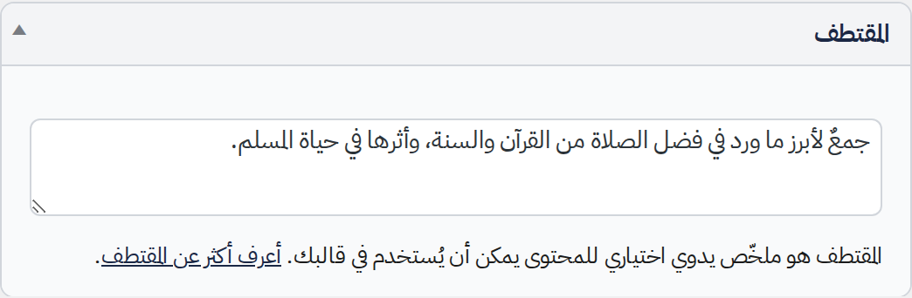
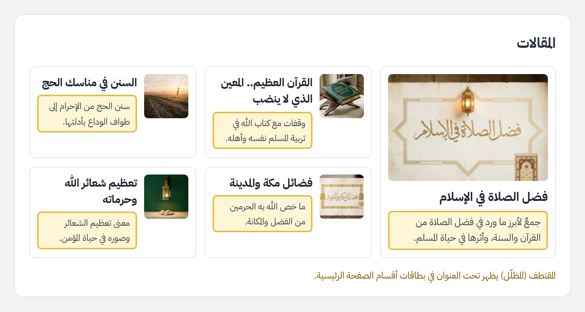
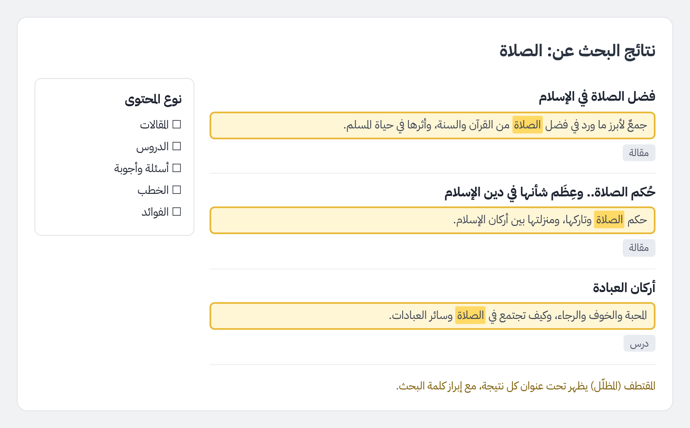
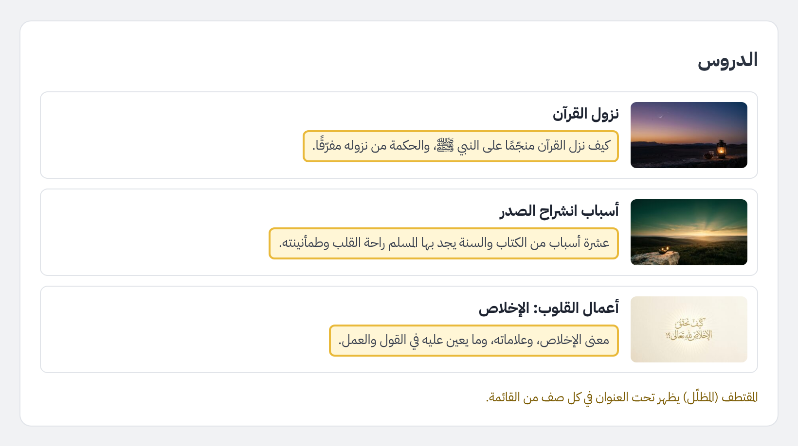

ما هو المقتطف؟
المقتطف نص اختياري يرتبط بالمحتوى، أيًّا كان نوعه (مقالة، درس، خطبة، فتوى، فائدة…)، ويُستخدم في أغلب الأحيان ملخصًا للمحتوى.

بحسب القالب الذي يستخدمه موقعك، يمكن أن تظهر المقتطفات في صفحات مختلفة (الصفحة الرئيسية، ونتائج البحث، وصفحات أنواع المحتوى، وغيرها).



تختلف أشكال القوالب، لكن مكان المقتطف ثابت: تحت عنوان المحتوى.
إذا كان المقتطف فارغًا، يُنشأ مقتطف تلقائيًا من أول 55 كلمة في المحتوى.